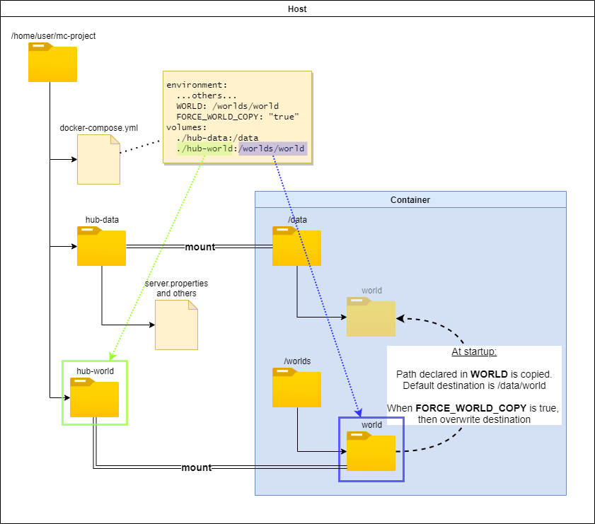

Working with mods and plugins
Optional plugins, mods, and config attach points
There are optional volume paths that can be attached to supply content to be copied into the data area:
/plugins- contents are synchronized into
/data/pluginsfor Bukkit related server types. The source can be changed by settingCOPY_PLUGINS_SRC. The destination can be changed by settingCOPY_PLUGINS_DEST. SetSYNC_SKIP_NEWER_IN_DESTINATION=falseif you want files from/pluginsto take precedence over newer files in/data/plugins. /mods- contents are synchronized into
/data/modsfor Fabric and Forge related server types. The source can be changed by settingCOPY_MODS_SRC. The destination can be changed by settingCOPY_MODS_DEST. /config- contents are synchronized into
/data/configby default, but can be changed withCOPY_CONFIG_DEST. The source can be changed by settingCOPY_CONFIG_SRC. For example,-v ./config:/config -e COPY_CONFIG_DEST=/datawill allow you to copy over files likebukkit.ymland so on directly into the server directory. SetSYNC_SKIP_NEWER_IN_DESTINATION=falseif you want files from/configto take precedence over newer files in/data/config.
By default, the environment variable processing is performed on synchronized files that match the expected suffixes in REPLACE_ENV_SUFFIXES (by default "yml,yaml,txt,cfg,conf,properties,hjson,json,tml,toml") and are not excluded by REPLACE_ENV_VARIABLES_EXCLUDES and REPLACE_ENV_VARIABLES_EXCLUDE_PATHS. This processing can be disabled by setting REPLACE_ENV_DURING_SYNC to false.
If you want old mods/plugins to be removed before the content is brought over from those attach points, then add -e REMOVE_OLD_MODS=TRUE. You can fine tune the removal process by specifying the REMOVE_OLD_MODS_INCLUDE and REMOVE_OLD_MODS_EXCLUDE variables, which are comma separated lists of file glob patterns. If a directory is excluded, then it and all of its contents are excluded. By default, only jars are removed.
You can also specify the REMOVE_OLD_MODS_DEPTH (default is 16) variable to only delete files up to a certain level.
For example: -e REMOVE_OLD_MODS=TRUE -e REMOVE_OLD_MODS_INCLUDE="*.jar" -e REMOVE_OLD_MODS_DEPTH=1 will remove all old jar files that are directly inside the plugins/ or mods/ directory.
These paths work well if you want to have a common set of modules in a separate location, but still have multiple worlds with different server requirements in either persistent volumes or a downloadable archive.
For more flexibility with mods/plugins preparation, you can declare directories to use in the
MODSvariable
Auto-downloading SpigotMC/Bukkit/PaperMC plugins with Spiget
The SPIGET_RESOURCES variable can be set with a comma-separated list of SpigotMC resource IDs to automatically download SpigotMC resources/plugins using the spiget API. Resources that are zip files will be expanded into the plugins directory and resources that are simply jar files will be moved there.
NOTE: the variable is purposely spelled SPIGET with an "E"
The resource ID can be located from the numerical part of the URL after the shortname and a dot. For example, the ID is 9089 from
https://www.spigotmc.org/resources/essentialsx.9089/
====
For example, the following will auto-download the EssentialsX and Vault plugins:
-e SPIGET_RESOURCES=9089,34315
Auto-download mods from Modrinth
Modrinth is an open source modding platform with a clean, easy to use website for finding Fabric and Forge mods. At startup, the container will automatically locate and download the newest versions of mod files that correspond to the TYPE and VERSION in use. Older file versions downloaded previously will automatically be cleaned up.
- MODRINTH_PROJECTS : comma separated list of project slugs (short name) or IDs. The project ID can be located in the "Technical information" section. The slug is the part of the page URL that follows
/mod/: Also, specific version/type can be declared using colon symbol and version id/type after the project slug. The version id can be found at 'Metadata' section. Valid version types arerelease,beta,alpha. For instance: - MODRINTH_DOWNLOAD_OPTIONAL_DEPENDENCIES=true : required dependencies of the project will always be downloaded and optional dependencies can also be downloaded by setting this to
true - MODRINTH_ALLOWED_VERSION_TYPE=release : the version type is used to determine the newest version to use from each project. The allowed values are
release,beta,alpha.
Downloadable mod/plugin pack for Forge, Fabric, and Bukkit-like Servers
Like the WORLD option above, you can specify the URL or path of a "mod pack"
to download and install into mods for Forge/Fabric or plugins for Bukkit/Spigot.
To use this option pass the environment variable MODPACK, such as
docker run -d -e MODPACK=http://www.example.com/mods/modpack.zip ...
NOTE: The referenced URL must be a zip file with one or more jar files at the
top level of the zip archive. Make sure the jars are compatible with the
particular TYPE of server you are running.
You may also download or copy over individual mods using the MODS environment variable. MODS contains a comma-separated list of
- URL of a jar file
- container path to a jar file
- container path to a directory containing jar files
docker run -d -e MODS=https://www.example.com/mods/mod1.jar,/plugins/common,/plugins/special/mod2.jar ...
ForgeAPI usage to use non-version specific projects
NOTE: This potentially could lead to unexpected behavior if the Mod receives an update with unexpected behavior.
This is more complicated because you will be pulling/using the latest mod for the release of your game. To get started make sure you have a CursedForge API Key. Then use the environmental parameters in your docker build.
Please be aware of the following when using these options for your mods: * Mod Release types: Release, Beta, and Alpha. * Mod dependencies: Required and Optional * Mod family: Fabric, Forge, and Bukkit.
Parameters to use the ForgeAPI:
MODS_FORGEAPI_KEY- RequiredMODS_FORGEAPI_FILE- Required or use MODS_FORGEAPI_PROJECTIDS (Overrides MODS_FORGEAPI_PROJECTIDS)MODS_FORGEAPI_PROJECTIDS- Required or use MODS_FORGEAPI_FILEMODS_FORGEAPI_RELEASES- Default is release, Options: [Release|Beta|Alpha]MODS_FORGEAPI_DOWNLOAD_DEPENDENCIES- Default is False, attempts to download required mods (releaseType Release) defined in Forge.MODS_FORGEAPI_IGNORE_GAMETYPE- Default is False, Allows for filtering mods on family type: FORGE, FABRIC, and BUKKIT. (Does not filter for Vanilla or custom)REMOVE_OLD_FORGEAPI_MODS- Default is FalseREMOVE_OLD_DATAPACKS_DEPTH- Default is 1REMOVE_OLD_DATAPACKS_INCLUDE- Default is *.jar
Example of expected forge api project ids, releases, and key:
Example of expected ForgeAPI file format.
Field Description:
* name is currently unused, but can be used to document each entry.
* projectId id is the id found on the CurseForge website for a particular mod
* releaseType Type corresponds to forge's R, B, A icon for each file. Default Release, options are (release|beta|alpha).
* fileName is used for version pinning if latest file will not work for you.
[
{
"name": "fabric api",
"projectId": "306612",
"releaseType": "release"
},
{
"name": "fabric voice mod",
"projectId": "416089",
"releaseType": "beta"
},
{
"name": "Biomes o plenty",
"projectId": "220318",
"fileName": "BiomesOPlenty-1.18.1-15.0.0.100-universal.jar",
"releaseType": "release"
}
]
Generic pack files
To install all the server content (jars, mods, plugins, configs, etc.) from a zip or tgz file, then set GENERIC_PACK to the container path or URL of the archive file. This can also be used to apply a CurseForge modpack that is missing a server start script and/or Forge installer.
If multiple generic packs need to be applied together, set GENERIC_PACKS instead, with a comma separated list of archive file paths and/or URLs to files.
To avoid repetition, each entry will be prefixed by the value of GENERIC_PACKS_PREFIX and suffixed by the value of GENERIC_PACKS_SUFFIX, both of which are optional. For example, the following variables
GENERIC_PACKS=configs-v9.0.1,mods-v4.3.6
GENERIC_PACKS_PREFIX=https://cdn.example.org/
GENERIC_PACKS_SUFFIX=.zip
would expand to https://cdn.example.org/configs-v9.0.1.zip,https://cdn.example.org/mods-v4.3.6.zip.
If applying large generic packs, the update can be time-consuming. To skip the update set SKIP_GENERIC_PACK_UPDATE_CHECK to "true". Conversely, the generic pack(s) can be forced to be applied by setting FORCE_GENERIC_PACK_UPDATE to "true".
The most time consuming portion of the generic pack update is generating and comparing the SHA1 checksum. To skip the checksum generation, set SKIP_GENERIC_PACK_CHECKSUM to "true.
Mod/Plugin URL Listing File
As an alternative to MODS, the variable MODS_FILE can be set with the path to a text file listing a mod/plugin URL on each line. For example, the following
-e MODS_FILE=/extras/mods.txt
would load from a file mounted into the container at /extras/mods.txt. That file might look like:
https://edge.forgecdn.net/files/2965/233/Bookshelf-1.15.2-5.6.40.jar
https://edge.forgecdn.net/files/2926/27/ProgressiveBosses-2.1.5-mc1.15.2.jar
# This and next line are ignored
#https://edge.forgecdn.net/files/3248/905/goblintraders-1.3.1-1.15.2.jar
https://edge.forgecdn.net/files/3272/32/jei-1.15.2-6.0.3.16.jar
https://edge.forgecdn.net/files/2871/647/ToastControl-1.15.2-3.0.1.jar
Note
Blank lines and lines that start with a # will be ignored
This compose file shows another example of using this feature.
It is recommended to combine this option with REMOVE_OLD_MODS=TRUE to ensure the mods/plugins remain consistent with the file's listing.
Remove old mods/plugins
When the option above is specified (MODPACK) you can also instruct script to
delete old mods/plugins prior to installing new ones. This behaviour is desirable
in case you want to upgrade mods/plugins from downloaded zip file.
To use this option pass the environment variable REMOVE_OLD_MODS=TRUE, such as
docker run -d -e REMOVE_OLD_MODS=TRUE -e MODPACK=http://www.example.com/mods/modpack.zip ...
Danger
All content of the mods or plugins directory will be deleted
before unpacking new content from the MODPACK or MODS.
Working with world data
Downloadable world
Instead of mounting the /data volume, you can instead specify the URL of a ZIP or compressed TAR file containing an archived world. It will be searched for a file level.dat and the containing subdirectory moved to the directory named by $LEVEL. This means that most of the archived Minecraft worlds downloadable from the Internet will already be in the correct format.
docker run -d -e WORLD=http://www.example.com/worlds/MySave.zip ...
Note
This URL must be accessible from inside the container. Therefore, you should use an IP address or a globally resolvable FQDN, or else the name of a linked container.
Note
If the archive contains more than one level.dat, then the one to select can be picked with WORLD_INDEX, which defaults to 1.
Cloning world from a container path
The WORLD option can also be used to reference a directory, zip file, or compressed tar file that will be used as a source to clone or extract the world directory.
For example, the following would initially clone the world's content from /worlds/basic. Also notice in the example that you should use a read-only volume attachment to ensure the clone source remains pristine.
The following diagram shows how this option can be used in a compose deployment with a relative directory:

Overwrite world on start
The world will only be downloaded or copied if it doesn't exist already. Set FORCE_WORLD_COPY=TRUE to force overwrite the world on every server start.
Custom worlds directory path
To set a custom worlds directory for the Multiverse plugin on a baremetal server, you'd pass the --world-dir argument after the jar file.
In order to accomplish the same in a containerized server, set the EXTRA_ARGS environment variable in your command line or docker compose yaml to the same argument string. For example:
--world-container, -W, and --universe are aliases to --world-dir and can also be used.
Datapacks
Datapacks can be installed in a similar manner to mods/plugins. There are many environment variables which function in the same way they do for mods:
DATAPACKS: comma-separated list of zip file URL, zip file in container, or directory in containerDATAPACKS_FILE: a text file within the container where each line is a zip file URL, zip file in container, or directory in containerREMOVE_OLD_DATAPACKS: if "true" the datapacks directory is removed of everything matchingREMOVE_OLD_DATAPACKS_INCLUDE, but excludingREMOVE_OLD_DATAPACKS_EXCLUDEno deeper thanREMOVE_OLD_DATAPACKS_DEPTHREMOVE_OLD_DATAPACKS_DEPTH: default is 16REMOVE_OLD_DATAPACKS_INCLUDE: default is*.zipREMOVE_OLD_DATAPACKS_EXCLUDE: default is empty
Datapacks will be placed in /data/$LEVEL/datapacks
VanillaTweaks
VanillaTweaks datapacks, crafting tweaks, and resource packs can be installed with a share code from the website OR a json file to specify packs to download and install. Datapacks and crafting tweaks will be installed into the current world directory specified by $LEVEL. As new versions of the packs are retrieved the previous versions will automatically be cleaned up.
The share code is the part following the hash sign, as shown here:
Accepted Parameters:
VANILLATWEAKS_FILE: comma separated list of JSON VanillaTweak pack files accessible within the containerVANILLATWEAKS_SHARECODE: comma separated list of share codes
Example of expected VanillaTweaks share codes:
Note
ResourcePacks, DataPacks, and CraftingTweaks all have separate sharecodes
Example of expected VanillaTweaks files:
VANILLATWEAKS_FILE: /config/vt-datapacks.json,/config/vt-craftingtweaks.json,/config/vt-resourcepacks.json
{
"type": "datapacks",
"version": "1.18",
"packs": {
"survival": [
"graves",
"multiplayer sleep"
],
"items": ["armored elytra"]
}
}